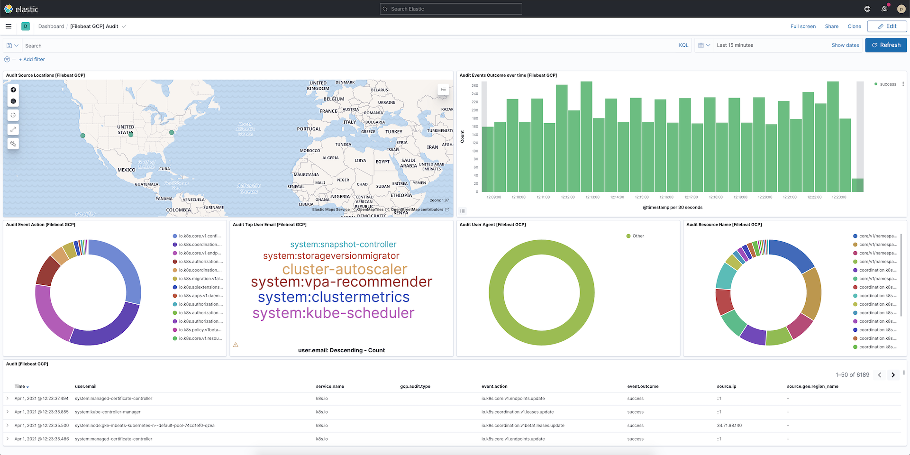

Monitor Google Cloud Platformedit
In this tutorial, you’ll learn how to monitor your Google Cloud Platform (GCP) deployments using Elastic Observability: Logs and Metrics.
If you don’t want to provision VM and install data shippers due to process and management overhead, you can skip this step and ingest logs directly from Pub/Sub in the Google Cloud Console to Elastic with GCP Dataflow Templates.
What you’ll learnedit
You’ll learn how to:
- Set up a GCP Service Account.
- Ingest metrics using the Metricbeat Google Cloud Platform module and view those metrics in Kibana.
- Export GCP audit logs through Pub/Sub topics.
- Ingest logs using the Filebeat Google Cloud module and view those logs in Kibana.
Before you beginedit
Create a deployment using our hosted Elasticsearch Service on Elastic Cloud. The deployment includes an Elasticsearch cluster for storing and searching your data, and Kibana for visualizing and managing your data. For more information, see Spin up the Elastic Stack.
Step 1: Setup a Service Accountedit
Google Cloud Platform implements service accounts as a way to access APIs securely. To monitor GCP with Elastic, you will need a service account. The easiest way is to use a predefined service account that GCP creates automatically. Alternatively, you can create a new service account. This tutorial creates a new one.
First, to access the service account menu, click Menu → IAM & Admin → Service Accounts.

Next, click Create Service Account. Define the new service account name (for example, "gcp-monitor") and the description (for example, "Service account to monitor GCP services using the Elastic Stack").

Make sure to select the correct roles.
To monitor GCP services, you need to add these roles to the service account:
Compute Viewer:

Monitoring Viewer:

Pub/Sub Subscriber:

The final result should be the following:

Click Continue, then skip granting users access to this service. Finally, click Done. The service account is now ready to be used.
Next, to use the service account, click Manage keys.

Then, add a new JSON key type by selecting Create new key.

After that, the credential file is downloaded. Keep this file in an accessible place to use later.
Step 2: Install and configure Metricbeatedit
This tutorial assumes the Elastic cluster is already running. Make sure you have your cloud ID and your credentials on hand.
To monitor GCP using the Elastic Stack, you need two main components: an Elastic deployment to store and analyze the data and an agent to collect and ship the data.
Two agents can be used to monitor GCP: Metricbeat is used to monitor metrics, and Filebeat to monitor logs. You can run the agents on any machine. This tutorial uses a small GCP instance, e2-small (2 vCPUs, 2 GB memory), with an Ubuntu distribution.
Install Metricbeatedit
Download and install Metricbeat.
curl -L -O https://artifacts.elastic.co/downloads/beats/metricbeat/metricbeat-8.0.1-amd64.deb sudo dpkg -i metricbeat-8.0.1-amd64.deb
curl -L -O https://artifacts.elastic.co/downloads/beats/metricbeat/metricbeat-8.0.1-x86_64.rpm sudo rpm -vi metricbeat-8.0.1-x86_64.rpm
curl -L -O https://artifacts.elastic.co/downloads/beats/metricbeat/metricbeat-8.0.1-darwin-x86_64.tar.gz tar xzvf metricbeat-8.0.1-darwin-x86_64.tar.gz
curl -L -O https://artifacts.elastic.co/downloads/beats/metricbeat/metricbeat-8.0.1-linux-x86_64.tar.gz tar xzvf metricbeat-8.0.1-linux-x86_64.tar.gz
- Download the Metricbeat Windows zip file from the downloads page.
-
Extract the contents of the zip file into
C:\Program Files. -
Rename the
metricbeat-<version>-windowsdirectory toMetricbeat. - Open a PowerShell prompt as an Administrator (right-click the PowerShell icon and select Run As Administrator).
-
From the PowerShell prompt, run the following commands to install Metricbeat as a Windows service:
PS > cd 'C:\Program Files\Metricbeat' PS C:\Program Files\Metricbeat> .\install-service-metricbeat.ps1
If script execution is disabled on your system, you need to set the
execution policy for the current session to allow the script to run. For
example:
PowerShell.exe -ExecutionPolicy UnRestricted -File .\install-service-metricbeat.ps1.
Set up assetsedit
Metricbeat comes with predefined assets for parsing, indexing, and visualizing your data. Run the following command to load these assets. It may take a few minutes.
./metricbeat setup -e -E 'cloud.id=YOUR_DEPLOYMENT_CLOUD_ID' -E 'cloud.auth=elastic:YOUR_SUPER_SECRET_PASS'
|
Substitute your Cloud ID and an administrator’s |
Setting up Metricbeat is an admin-level task that requires extra privileges. As a best practice, use an administrator role to set up, and a more restrictive role for event publishing (which you will do next).
Configure Metricbeat outputedit
Next, you are going to configure Metricbeat output to Elasticsearch Service.
-
Use the Metricbeat keystore to store secure settings. Store the Cloud ID in the keystore.
./metricbeat keystore create echo -n "<Your Deployment Cloud ID>" | ./metricbeat keystore add CLOUD_ID --stdin
-
To store metrics in Elasticsearch with minimal permissions, create an API key to send data from Metricbeat to Elasticsearch Service. Log into Kibana (you can do so from the Cloud Console without typing in any permissions) and select Management → Dev Tools. Send the following request:
POST /_security/api_key { "name": "metricbeat-monitor", "role_descriptors": { "metricbeat_writer": { "cluster": ["monitor", "read_ilm"], "index": [ { "names": ["metricbeat-*"], "privileges": ["view_index_metadata", "create_doc"] } ] } } } -
The response contains an
api_keyand anidfield, which can be stored in the Metricbeat keystore in the following format:id:api_key.echo -n "IhrJJHMB4JmIUAPLuM35:1GbfxhkMT8COBB4JWY3pvQ" | ./metricbeat keystore add ES_API_KEY --stdin
Make sure you specify the
-nparameter; otherwise, you will have painful debugging sessions due to adding a newline at the end of your API key. -
To see if both settings have been stored, run the following command:
./metricbeat keystore list
-
To configure Metricbeat to output to Elasticsearch Service, edit the
metricbeat.ymlconfiguration file. Add the following lines to the end of the file.cloud.id: ${CLOUD_ID} output.elasticsearch: api_key: ${ES_API_KEY} -
Finally, test if the configuration is working. If it is not working, verify if you used the right credentials and add them again.
./metricbeat test output
Now that the output is working, you are going to set up the input (GCP).
Step 3: Configure Metricbeat Google Cloud Platform moduleedit
To collect metrics from Google Cloud Platform, use the Google Cloud Platform module. This module periodically fetches monitoring metrics from Google Cloud Platform using Stackdriver Monitoring API for Google Cloud Platform services.
Extra GCP charges on Stackdriver Monitoring API requests may be generated by this module. Please see rough estimation of the number of API calls for more details.
-
Enable the GCP module.
./metricbeat modules enable gcp
-
Edit the
modules.d/gcp.ymlfile to configure which metrics to collect.- module: gcp metricsets: - compute zone: "" project_id: "your-project-id" period: 1m credentials_file_path: "/home/ubuntu/credentials.json"The
computemetricset is a predefined metricset that collects some GCP compute metrics.Defines which zones to monitor, an empty value collects data from all zones
Collects metrics within the
your-project-idproject-id.Collects metrics every minute
The GCP credential file that you generated earlier. (Don’t forget to create the file if it does not exist and use the correct full path).
-
To check if Metricbeat can collect data, test the input by running the following command:
./metricbeat test modules gcp
Metricbeat will print GCP metrics to the terminal, if the setup is correct.
-
When the input and output are ready, start Metricbeat to collect the data.
./metricbeat -e
-
Finally, log into Kibana and open the [Metricbeat GCP] Compute Overview dashboard.

Step 4: Install and configure Filebeatedit
Now that Metricbeat is up and running, configure Filebeat to collect Google Cloud logs.
Install Filebeatedit
Download and install Filebeat.
curl -L -O https://artifacts.elastic.co/downloads/beats/filebeat/filebeat-8.0.1-amd64.deb sudo dpkg -i filebeat-8.0.1-amd64.deb
curl -L -O https://artifacts.elastic.co/downloads/beats/filebeat/filebeat-8.0.1-x86_64.rpm sudo rpm -vi filebeat-8.0.1-x86_64.rpm
curl -L -O https://artifacts.elastic.co/downloads/beats/filebeat/filebeat-8.0.1-darwin-x86_64.tar.gz tar xzvf filebeat-8.0.1-darwin-x86_64.tar.gz
curl -L -O https://artifacts.elastic.co/downloads/beats/filebeat/filebeat-8.0.1-linux-x86_64.tar.gz tar xzvf filebeat-8.0.1-linux-x86_64.tar.gz
- Download the Filebeat Windows zip file from the downloads page.
-
Extract the contents of the zip file into
C:\Program Files. -
Rename the
filebeat-<version>-windowsdirectory toFilebeat. - Open a PowerShell prompt as an Administrator (right-click the PowerShell icon and select Run As Administrator).
-
From the PowerShell prompt, run the following commands to install Filebeat as a Windows service:
PS > cd 'C:\Program Files\Filebeat' PS C:\Program Files\Filebeat> .\install-service-filebeat.ps1
If script execution is disabled on your system, you need to set the
execution policy for the current session to allow the script to run. For
example:
PowerShell.exe -ExecutionPolicy UnRestricted -File .\install-service-filebeat.ps1.
Set up assetsedit
Filebeat comes with predefined assets for parsing, indexing, and visualizing your data. Run the following command to load these assets. It may take a few minutes.
./filebeat setup -e -E 'cloud.id=YOUR_DEPLOYMENT_CLOUD_ID' -E 'cloud.auth=elastic:YOUR_SUPER_SECRET_PASS'
|
Substitute your Cloud ID and an administrator’s |
Setting up Filebeat is an admin-level task that requires extra privileges. As a best practice, use an administrator role to set up and a more restrictive role for event publishing (which you will do next).
Configure Filebeat outputedit
Next, you are going to configure Filebeat output to Elasticsearch Service.
-
Use the Filebeat keystore to store secure settings. Store the Cloud ID in the keystore.
./filebeat keystore create echo -n "<Your Deployment Cloud ID>" | ./filebeat keystore add CLOUD_ID --stdin
-
To store logs in Elasticsearch with minimal permissions, create an API key to send data from Filebeat to Elasticsearch Service. Log into Kibana (you can do so from the Cloud Console without typing in any permissions) and select Management → Dev Tools. Send the following request:
POST /_security/api_key { "name": "filebeat-monitor-gcp", "role_descriptors": { "filebeat_writer": { "cluster": [ "monitor", "read_ilm", "cluster:admin/ingest/pipeline/get", "cluster:admin/ingest/pipeline/put" ], "index": [ { "names": ["filebeat-*"], "privileges": ["view_index_metadata", "create_doc"] } ] } } }Filebeat needs extra cluster permissions to publish logs, which differs from the Metricbeat configuration. You can find more details here.
-
The response contains an
api_keyand anidfield, which can be stored in the Filebeat keystore in the following format:id:api_key.echo -n "IhrJJHMB4JmIUAPLuM35:1GbfxhkMT8COBB4JWY3pvQ" | ./filebeat keystore add ES_API_KEY --stdin
Make sure you specify the
-nparameter; otherwise, you will have painful debugging sessions due to adding a newline at the end of your API key. -
To see if both settings have been stored, run the following command:
./filebeat keystore list
-
To configure Filebeat to output to Elasticsearch Service, edit the
filebeat.ymlconfiguration file. Add the following lines to the end of the file.cloud.id: ${CLOUD_ID} output.elasticsearch: api_key: ${ES_API_KEY} -
Finally, test if the configuration is working. If it is not working, verify that you used the right credentials and, if necessary, add them again.
./filebeat test output
Now that the output is working, you are going to set up the input (GCP).
Step 5: Configure Filebeat Google Cloud moduleedit
To collect logs from Google Cloud Platform, use the
Google Cloud Platform
module. This module periodically fetches logs that have been exported from
Stackdriver to a Google Pub/Sub topic sink.
There are three available filesets:
audit, vpcflow, firewall. This tutorial covers the audit fileset.
-
Go to the Logs Router page to configure GCP to export logs to a Pub/Sub topic. Use the search bar to find the page:

To set up the logs routing sink, click Create sink. Set sink name as
monitor-gcp-audit-sink. Select the Cloud Pub/Sub topic as the sink service and Create new Cloud Pub/Sub topic namedmonitor-gcp-audit:
Finally, under Choose logs to include in sink, add
logName:"cloudaudit.googleapis.com"(it includes all audit logs). Click create sink. It will look something like the following:
-
Now that GCP is configured to export audit logs, enable Filebeat Google Cloud module.
./filebeat modules enable gcp
-
Edit the
modules.d/gcp.ymlfile with the following configurations.- module: gcp vpcflow: enabled: false firewall: enabled: false audit: enabled: true var.project_id: "elastic-education" var.topic: "monitor-gcp-audit" var.subscription_name: "monitor-gcp-audit-sub" var.credentials_file: "/home/ubuntu/credentials.json"Disables both
vpcflowandfirewallfilesets.Enables the
auditfileset.Collects data within the
elastic-educationproject-id.Collects logs from the
monitor-gcp-audittopic.Google Cloud Pub/Sub topic subscription name. If the subscription does not exist it will be created.
The GCP credential file that you generated earlier. (Don’t forget to create the file if it does not exist and to use the correct full path).
-
Start Filebeat to collect the logs.
./filebeat -e
-
Finally, log into Kibana and open the [Filebeat GCP] Audit dashboard.
